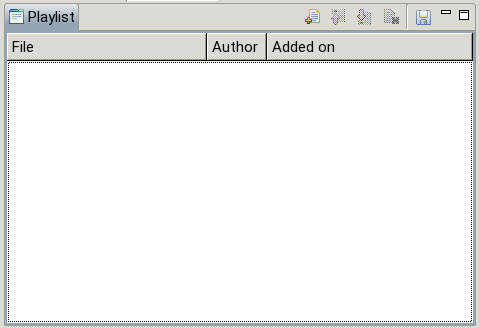

The Playlist view shows the waiting queue of the Engine. The filename, author and the time the scan was added of each entry is displayed. The topmost entry is the head of the list, i.e. the one that will be loaded next into the engine.
Entries can be added in two different ways. Scan descriptions build with the Editor and send to the Engine are enqueued here. The toolbar command allows inserting a scan description from an existing file to the end of the list. SCML files as well as SCML data embedded in H5 files can be added.
Additional toolbar commands allow deleting entries and modifying the order of the list (by moving items up or down).